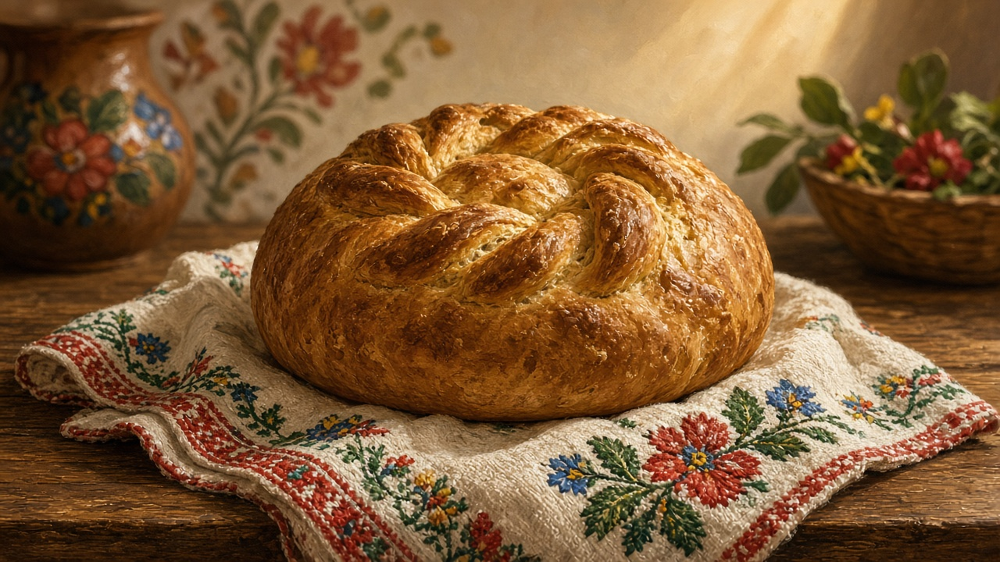
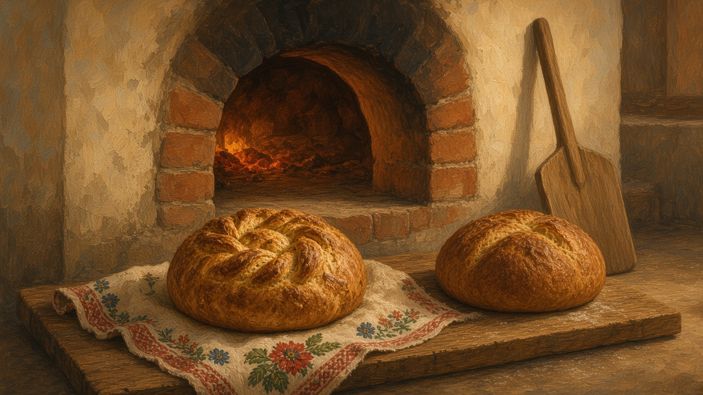

Bread
Pâine. Not a bakery catalog. The loaf that still means the house is fed, whether it came from the cuptor or the shop.

The loaf on the table
A round loaf, cut thick. Salt on the same cloth. That is still the picture a lot of people mean by masă, the table, even when the rest of the meal is soup, cheese, or leftover stew. Guests are met with pâine și sare — bread and salt — a welcome older than any printed menu; the pinch of that welcome sits on salt. You break, you salt, you sit. The word itself is Latin that stayed: pâine from panis, the same bone as the lesson on the Latin that stayed. Mămăligă sits beside the loaf in many houses and is not a lesser claim; it is a different one. Cornmeal is weekday filling. Bread is the sign that someone kept the room. The stove that baked it, or that still warms the wall while the shop loaf is sliced, is mapped on the house.
The cut is ordinary. Someone sets the round loaf on the cloth — the one with the red flowers, or a plain one washed for a guest — and the knife stays there. A thick slice. A child gets the heel. A guest who is already sitting gets the soft middle. Cheese, if the house has a piece, goes on the same cloth. You break before you talk. A house that only keeps the phrase still puts the loaf down first.
Wheat, mill, oven
The loaf starts in the field. Seceriș, the cutting of the grain, is the hurry on the harvest page. What the mill does with that grain is quieter: a moară on a creek, then a village mill you paid in a share of the flour, then bags from a town silo. A small river that turned a wheel is the same water habit as rivers — the creek with no fame that still did a job. The oven was the cuptor in the yard, or the older sobă that took a few loaves after the fire had been pushed to one side. Neighbors shared a hot oven when wood was dear. Combines and factory flour did not erase the words. People still say “am scos pâinea” — I took the bread out — the way they say the house is all right.
You heated the cuptor until a pinch of flour browned on the floor. Coals went to one side. The loaves went in on a long wooden peel and came out when the crust sounded hollow. A sobă in the room took fewer, and left the wall warm. The dough that crossed the lane was a neighbor’s, wrapped in a cloth, with a cut on top so the loaves did not get mixed. You waited. You carried yours home still cracking. Făină, the flour, had already come back from the mill a little lighter after the miller’s share. A paper bag from town later stood in for that sack. The woodpile got smaller. The sentence did not.
Days that ask for bread
Some days the loaf is not only food. Colaci are ritual breads — twisted or round — for a wedding, a christening, a funeral, or a basket taken to church. Colivă is different: boiled wheat, sweetened, for memorial days, not a loaf. Keep both pictures short and respectful; the calendar that holds them is on the table in the year. After Liturgy there may be a blessing of bread, or a piece of anafură taken home. Belief and the chalice sit on Orthodoxy. This page is only the grain that still walks into those rooms. Christmas and Easter tables still want a loaf even when the rest of the feast has become shop food. A name day in the yard still puts bread down first.
The everyday loaf is the one you cut for soup. A colac is twisted or ringed because the day asked for a shape you can tell from Tuesday. It may be broken at the wedding gate, or set with the basket that goes to church. You do not slice it the next morning and call that the same thing. Colivă stays in its bowl. Monday the plain loaf is back. This is only which bread is which.

Out for a loaf
In winter someone still goes out for bread when they will not go out for anything else. Boots, a short list, the shop or the neighbor who still fires a cuptor on the day this lane bakes. The path is the measured trip on winter. You come back with a warm loaf in a cloth, or a sliced one in a bag, and the house counts as fed. A child sent with the cloth is told not to set the loaf in the snow. In town the same job is a corner shop, and you still do not skip it.
A guest at the gate still gets pâine și sare before anyone offers wine or the stronger glass — those pours sit on wine and țuică. If there is a piece of cheese, it goes on the same cloth. You do not need a feast for the errand. The house that has bread can wait on the rest.
Shop loaf and what stayed
Most weeks now the bread is bought. A town piață still sets a village oven loaf next to the sliced industrial one; that square is on the market. The shop loaf has its own shape: long, already sliced, a paper bag that tears at a damp corner, a date printed where a cut in the dough used to be. It feeds the week. It does not pretend to be the yard. Apartment kitchens keep the bag on the counter and the embroidered cloth in a drawer, for a guest or a name day. The round loaf is rarer. The claim is not.
You do not need a list of regional shapes. You need the habit of asking whether this table still cuts a loaf, or only opens a bag — and whether a guest is still met with pâine și sare, or with a store cake that forgot the salt.
When the cuptor is gone
Fewer yards still fire a cuptor. The lane that used to carry dough in a cloth now carries a bag from the shop. Colaci turn up for the wedding and the memorial, and then the week returns to the sliced loaf. The word stayed. Pâine still means the house is fed if someone cut a loaf, even when the loaf was bought.
This page is only that: the loaf on the cloth, the oven neighbors shared, the days that ask for a different shape, and the bag that did not erase the word.